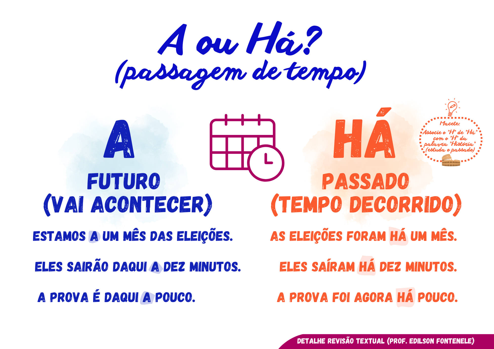

📌 Quando usar "Há"?
Usamos "há" quando nos referimos a algo que aconteceu no passado ou quando substitui "existe".
- "Há dois anos, viajei para a Europa."
- "Há muitas pessoas na sala."
📌 Quando usar "A"?
Usamos "a" para indicar distância ou futuro.
- "Daqui a cinco minutos sairemos."
- "Estamos a 10 km da praia."
📌 Quando usar "Ah"?
"Ah" é uma interjeição usada para expressar emoção.
- "Ah, entendi agora!"
- "Ah, que susto!"
🧠 Mapa Mental: "Há", "A" e "Ah"
Confira o resumo abaixo para entender melhor as diferenças:
🎯 Teste seu conhecimento!
Agora que você aprendeu as diferenças, faça o quiz abaixo:
🧠 Fazer o Quiz